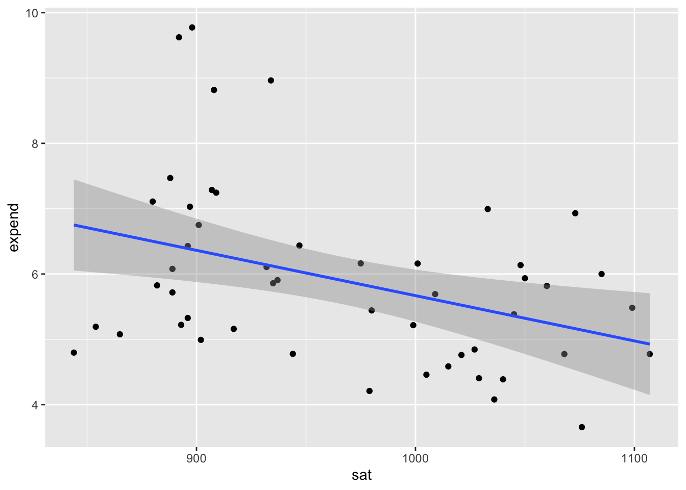
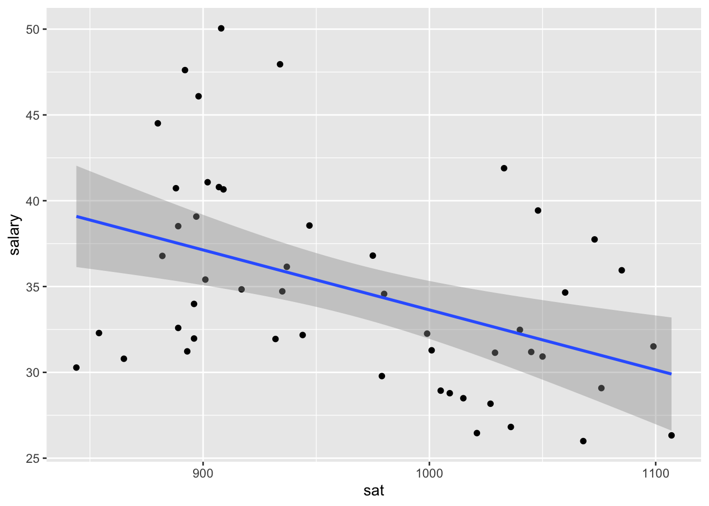

Mulivariate Viz
5.3 Exercises
Code
State expend ratio salary frac verbal math sat fracCat
1 Alabama 4.405 17.2 31.144 8 491 538 1029 (0,15]
2 Alaska 8.963 17.6 47.951 47 445 489 934 (45,100]
3 Arizona 4.778 19.3 32.175 27 448 496 944 (15,45]
4 Arkansas 4.459 17.1 28.934 6 482 523 1005 (0,15]
5 California 4.992 24.0 41.078 45 417 485 902 (15,45]
6 Colorado 5.443 18.4 34.571 29 462 518 980 (15,45]Exercise 1: SAT Scores
Part a
Plot of how the average SAT scores vary from state to state.
Part b Average SAT scores range from a score of approximately 800 to a little over 1100.The mode of the data is at a score of 900, as 6 states have that as an average score. It is a right-skewed graph, which make sense since higher scores would likely skew the data to be higher, while typically low scores would be unusual.
#Exercise 2: SAT Scores vs Per Pupil Spending & SAT Scores vs Salaries
Code

Code

Part b Both expense and salary have a negative relationship with SAT scores. This is surprising because my intuition assumed that higher spending per pupil and for teachers would mean better education, and therefore higher test scores.
Exercise 3: SAT Scores vs Per Pupil Spending and Teacher Salaries
Exercise 4: Another way to Incorporate Scale
Code

SAT scores seem to decrease as salary and expense increase. However, there appears to be a slight upward trend in SAT scores as the salary and expense gets as high as it can.
Exercise 5: Finally an Explanation
Part a The fracCat variable indicates this fraction: low (under 15% take the SAT), medium (15-45% take the SAT), and high (at least 45% take the SAT).

Part b

This visualization indicates that the more students that take the SAT, the lower the average score tends to be.
Part c
Code

When we control for the fraction of students that actually take the SAT, scores increase with expenses.
Part d: Simpson’s Paradox It appeared that SAT scores decrease as spending increases because we were missing a key piece of contextual information - participation. Student participation tends to be lower in states that spend less on their students. The students that do end up taking the tests are highly motivated and more likely to score better. In comparison, schools with higher expenses are more likely to encourage or require as many students as possible to take the SATs, so their participation becomes high but since they have a bigger size, the average becomes weighed down.